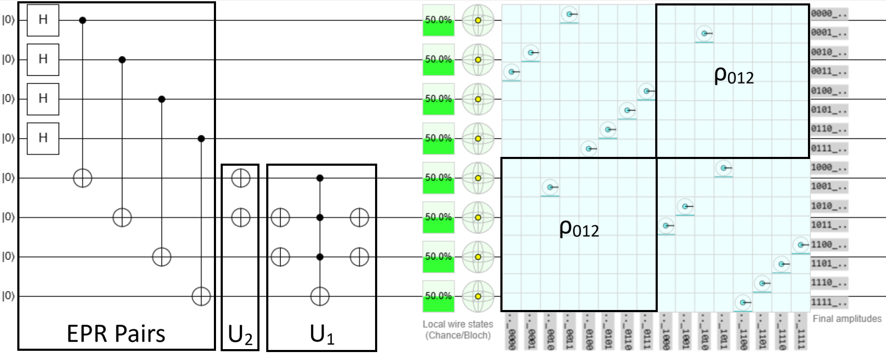

Introduction
One of the bottlenecks for certain quantum algorithms is the loading classical data onto the quantum computer. Suppose you have developed an algorithm that solves a particular problem exponentially faster than the best known classical methods, if loading the data loading is slow, then all advantage is lost before the quantum algorithm does a single operation.
This is exactly the case for solving linear systems of equations. There are currently an array of quantum algorithms (HHL, CKS, VQLS etc.) out there that can solve4 linear systems exponentially faster than any known classical algorithm. However, there is comparatively less work on the topic of efficiently loading the matrix $A$ (or $\vec{b}$) necessary to solve the system. My guess is that this is largely because data loading is an applications driven problem and, to date, quantum computers just aren’t very useful for solving anything beyond sample problems.
Therefore, in a recent study of mine5, my collaborators and I decided to tackle the problem of data loading for the Burgers’ equation, a paradigmatic nonlinear partial differential equation (PDE) relevant in fluid dynamics. Ultimately, we are interested in more complicated PDEs, but this serves as a starting place.
You might be wondering, how do you use a quantum linear solver to solve the nonlinear Burgers’ equation? Without going into the weeds6, the nonlinear PDE is transformed into a (ludicrously large) linear system of the form $A\vec{x}=\vec{b}$. This enables us to circumvent the difficulty of solving nonliner equations with quantum computers.
Ultimately, a solution to this linear system will provide an approximate solution to the desired Burgers’ equation. Hence, we need an algorithm to load the classical matrix $A$ onto the quantum computer to then obtain a solution using one of the many quantum solvers. For this writeup, we will be relying on the VQLS method.
Efficient Circuits for Sparse, Structured Matrices
Before we can explain our contribution, we must first give an overview of the study that we built upon, that is, Gnanasekaran and Surana (2024), henceforth called GS24. First, let’s introduce a set that will be used extensively throughout this blog post.
$$\rho_0=\begin{pmatrix}1 & 0 \\ 0 & 0 \end{pmatrix},\quad \rho_1=\begin{pmatrix}0&1\\0&0\end{pmatrix},\quad \rho_2=\begin{pmatrix}0&0\\1&0\end{pmatrix},\\ \rho_3=\begin{pmatrix}0&0\\0&1\end{pmatrix},\quad \rho_4=\begin{pmatrix}1&0\\0&1\end{pmatrix}.$$
Next, suppose that we have some non-unitary matrix $A$ that we block encode as
$$U = \begin{pmatrix} A^c & A \\ A & A^c \end{pmatrix},$$
where the matrix $U$ is unitary and $A^c$ is called the orthogonal (or unitary) complement of $A$. Informally, you can think of $A^c$ as a non-unique matrix that makes $U$ unitary for some matrix $A$.
What GS24 showed is that if $A$ is block encoded into $U$ in this way, then it can be implemented into the Variational Quantum Linear Solver (VQLS) and a solution to the linear system can thereby be obtained. This is done by simply adding a single ancilla qubit, and I encourage you to look at their Section 2 and Figure 1 to see exactly how it is done.
So how do we construct a circuit for this block encoding? They found that that if $U$ is actually split into the product of two specific unitary matrices, then it becomes straightforward to find the appropriate circuit. The two unitaries are
$$U = U_1 U_2 := \begin{pmatrix} I-AA^T & AA^T \\ AA^T & I-AA^T \end{pmatrix}\begin{pmatrix} \bar{A} & 0 \\ 0 & \bar{A} \end{pmatrix}.$$
where $\bar{A}$ is called the unitary completion of $A$. To find the circuit, we must therefore determine how to find $\bar{A}$. Thankfully, this is exactly what Theorem 1 of GS24 tells us: The unitary completion of $\rho_1$ and $\rho_2$ is $\sigma_x$, where $\sigma_x$ is the Pauli-X matrix. Similarly, the unitary completion of $\rho_0$, $\rho_3$, and $\rho_4$ is $\rho_4$. Below is a simple example to illustrate this.
Example 1
Suppose we have $A=\rho_1$, then by Theorem 1 of GS24, $\bar{A} = \sigma_x$. Therefore, $$U_1 = \begin{pmatrix} \rho_3 & \rho_0 \\\ \rho_0 & \rho_3 \end{pmatrix} = \ \begin{pmatrix} 0&0&1&0 \\\ 0&1&0&0 \\\ 1&0&0&0 \\\ 0&0&0&1 \end{pmatrix}$$ $$U_2 = \begin{pmatrix} \sigma_x & 0 \\\ 0 & \sigma_x \end{pmatrix} = \begin{pmatrix} 0&1&0&0 \\\ 1&0&0&0 \\\ 0&0&0&1 \\\ 0&0&1&0 \end{pmatrix}$$ The circuit for $U_1$ is an open CNOT gate, which is just a regular CNOT with $\sigma_x$ applied before and after the control. Next, since $U_2=I\otimes \sigma_x$, its circuit is a single $\sigma_x$ gate.The full circuit is given here in Quirk and reproduced below.

I suggest trying the same for the other $\rho_j$, with $j\in\{0,2,3,4\}$ matrices and verifying that the resulting block encoded matrix $U$ is unitary for each of them.
To recap, so far we have learned how to create a circuit to block encoding the $\rho_j$ matrices for $j\in\{0,\dots,4\}$. This on its own isn’t very interesting, but the innovation in the GS24 paper is how easy it is to scale up.
Informally, their Theorem 2 says: if you have some matrix $A$ that is a tensor product of any combination of the $\rho_j$ terms, then $\bar{A}$ is simply the tensor product of the individual unitary completions. The example below illustrates this point.
Example 2
$$A = \rho_0 \otimes \rho_1 \otimes \rho_2 \implies \bar{A} = \rho_4 \otimes \sigma_x \otimes \sigma_x.$$ Therefore, $$ U_1 = \begin{pmatrix} I-\rho_{003} & \rho_{003} \\\ \rho_{003} & I-\rho_{003} \end{pmatrix}, \quad U_2 = \begin{pmatrix} \rho_4\otimes\sigma_x\otimes\sigma_x & 0 \\\ 0 & \rho_4\otimes\sigma_x\otimes\sigma_x \end{pmatrix},$$ where I have used the notation $\rho_{ijk}=\rho_i\otimes\rho_j\otimes\rho_k$. As before, the $U_1$ circuit is constructed by a single control NOT gate, but this time there are multiple controls. Similarly, since $U_2$ has two $\sigma_x$ components, it is comprised of just two $\sigma_x$ gates. The full circuit is given here in Quirk and reproduced below.
By applying the product $U_1U_2$ we obtain the appropriate block encoding for $\rho_{012}$ as desired. $\Box$testing 1

here 1

here 2

You may be wondering, how did you determine which controls to apply (open vs. closed) for the $U_1$ gate in Example 2? This comes directly from the proof of Theorem 3 in GS24 where they provide an algorithm for exactly this purpose, summarized as follows: For each component of the matrix $A$, take the product with its transpose. If $\rho_j\rho_j^T = \rho_0$ then apply an open control, if $\rho_j\rho_j^T = \rho_3$ apply a closed control, and if $\rho_j\rho_j^T = \rho_4$ apply no control.
For Example 2 we have, $A=\rho_{012}$ so for each component we have $\rho_0\rho_0^T=\rho_0$, $\rho_1\rho_1^T=\rho_0$, and $\rho_2\rho_2^T=\rho_3$, which results in an open control, open control, and closed control respectively.
Next, let’s go arbitrarily large.
Example 3
$$A=\rho_{01234\dots 01234} \implies$$ $$\bar{A}=\rho_4\otimes\sigma_x\otimes\sigma_x\otimes\rho_4\otimes\rho_4\otimes\dots\otimes\rho_4\otimes\sigma_x\otimes\sigma_x\otimes\rho_4\otimes\rho_4,$$ $$\text{and}\quad AA^T = \rho_{00334\dots 00334}.$$ For $N$ repitions of $ 01234$, the $U_1$ circuit is a multi-control NOT with $2N$ open controls and $2N$ closed controls. Similarly, the $U_2$ circuit has $2N$ $ \sigma_x$ gates. $\Box$In Example 3 I once again used the shorthand $\rho_{ijk}=\rho_i\otimes\rho_j\otimes\rho_k$. This example demonstrates just how easy it is to determine the circuits for the block encoding of $A$ for even very large matrices.
What this all means is that if we have some matrix $A$ that is a tensor product of $\rho_j$ terms, then we can find an efficient circuit to block encode it. However, for an arbitrary matrix $A$ it is unlikely to be split into a single term like this. So instead, we split $A$ into a linear combination of terms where each is individually formed by tensor products of the $\rho_j$ terms. Mathematically, $$A = \sum_{l=1}^{n_l}\alpha_l A_l, \quad A_l = \bigotimes_k\rho_{r_k}$$ where $\alpha_l$ is a coefficient, and $r_k\in\{0,1,2,3,4\}$ is a set that generalizes the indices.
This is useful because now each $A_l$ can be block encoded – following the methods outlined above – and implemented into the VQLS routine to find a solution!
While this is a powerful tool for those very specific kinds of matrices, what if our matrix $A$ takes a similar but different form? Can we adapt this technique to once again create efficient circuits? The answer is yes! And that is the subject of the next blog post.
References
[1] Harrow, Aram W., Avinatan Hassidim, and Seth Lloyd. “Quantum algorithm for linear systems of equations.” Physical review letters 103.15 (2009): 150502.
[2] Childs, Andrew M., Robin Kothari, and Rolando D. Somma. “Quantum algorithm for systems of linear equations with exponentially improved dependence on precision.” SIAM Journal on Computing 46.6 (2017): 1920-1950.
[3] Bravo-Prieto, Carlos, et al. “Variational quantum linear solver.” Quantum 7 (2023): 1188.
[4] Aaronson, Scott. “Read the fine print.” Nature Physics 11.4 (2015): 291-293.
[5] Demirdjian, Reuben, Thomas Hogancamp, and Daniel Gunlycke. “An Efficient Decomposition of the Carleman Linearized Burgers’ Equation.” arXiv preprint arXiv:2505.00285 (2025).
[6] Liu, Jin-Peng, et al. “Efficient quantum algorithm for dissipative nonlinear differential equations.” Proceedings of the National Academy of Sciences 118.35 (2021): e2026805118.
[7] A. Gnanasekaran and A. Surana, “Efficient Variational Quantum Linear Solver for Structured Sparse Matrices,” 2024 IEEE International Conference on Quantum Computing and Engineering (QCE), Montreal, QC, Canada, 2024, pp. 199-210, doi: 10.1109/QCE60285.2024.00033.